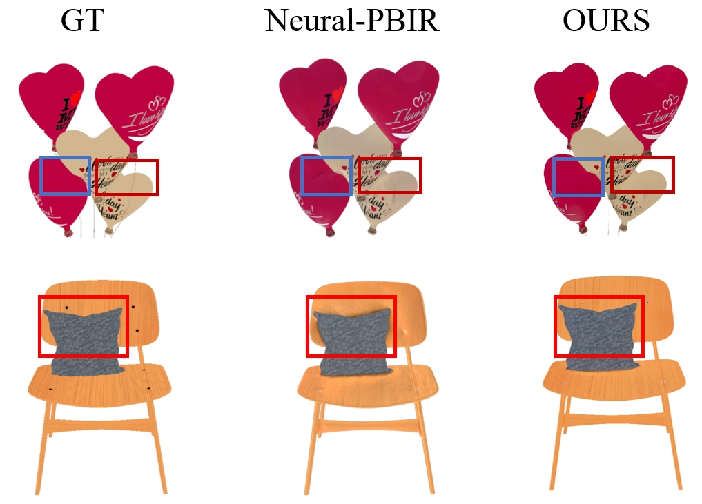
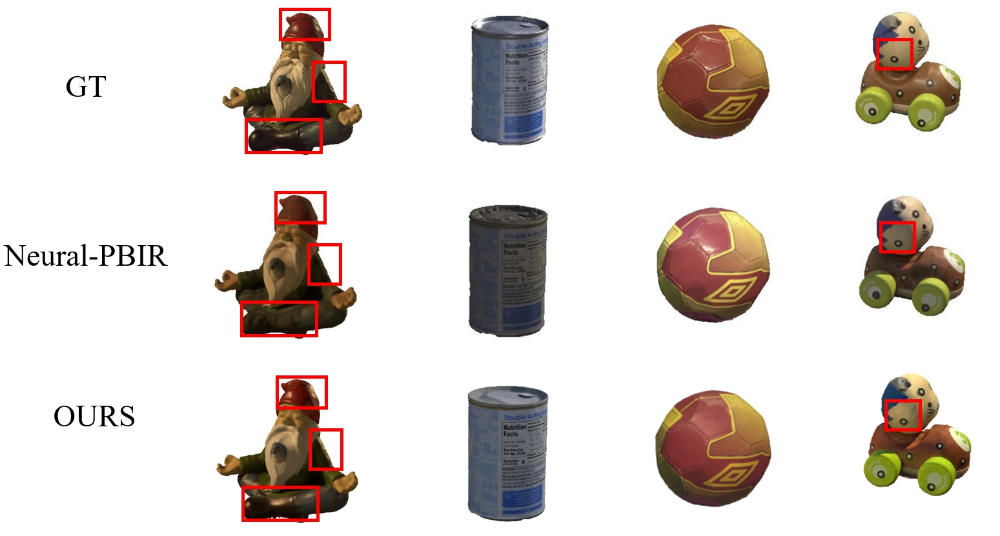
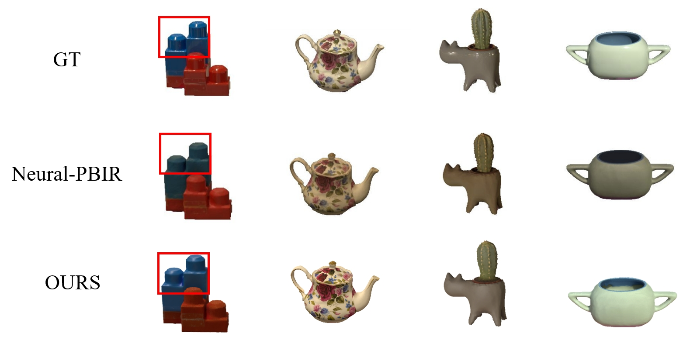

Comparison on albedo
Comparisons on the MII dataset: The results of Neural-PBIR were extracted directly from their paper since they have not released their code.

Comparison on relighting
Comparisons on the Stanford ORB dataset: The results of Neural-PBIR were extracted directly from their paper.

